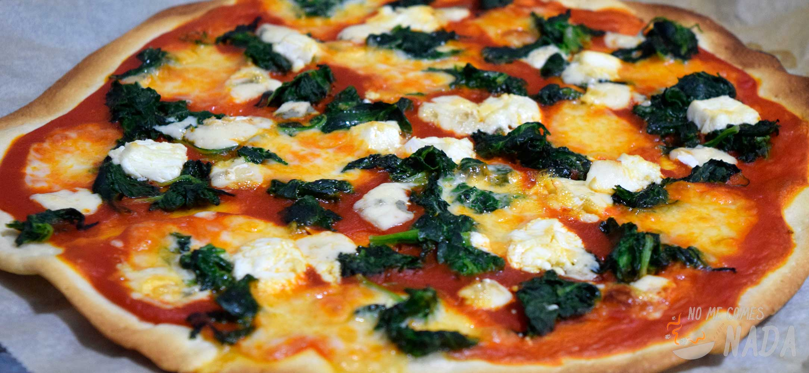

Bienvenidos a la receta de mi mejor pizza casera, una combinación perfecta de sabores frescos,
ingredientes de calidad y un toque único que hará que todos se queden pidiendo más.
Hoy te enseñaré cómo hacer una pizza deliciosa en casa, con masa casera, salsa de tomate fresca y un toque especial de perejil.
¡Sigue estos pasos y prepárate para disfrutar!
Comienza preparando la masa. En un bol grande, mezcla la harina con la sal y la levadura seca.
Haz un hueco en el centro y agrega el agua tibia poco a poco mientras mezclas con las manos.
Amasa durante unos 8-10 minutos hasta que la masa esté suave y elástica. Luego, agrega una cucharada de aceite de oliva,
amasa un poco más y cubre el bol con un paño limpio.
Deja reposar durante 1 hora para que la masa suba.

Mientras la masa está reposando, prepara la salsa. En una sartén, calienta una cucharada de aceite de oliva y
sofríe el ajo picado durante 1-2 minutos, hasta que esté dorado. Luego agrega el tomate triturado,
sal, pimienta,
azúcar y Tajín. Cocina a fuego lento durante 15 minutos, removiendo de vez en cuando, hasta que la salsa espese un poco.

Cuando la masa haya subido, colócala sobre una superficie enharinada y estírala con un rodillo o con las manos
hasta que tenga el tamaño y forma deseados. Si prefieres una pizza de borde grueso,
deja la masa un poco más alta en los bordes.

Precalienta el horno a 220°C (450°F). Coloca la masa estirada en una bandeja para horno o en una piedra para pizza.
Extiende una capa uniforme de la salsa de tomate sobre la masa.
Luego, cubre con una capa generosa de queso mozzarella rallado.
Ahora es momento de agregar los ingredientes de la cobertura. Coloca las rodajas de tomate,
pimiento rojo y cebolla morada sobre la pizza. Si te gusta el jamón o el peperoni, agrégalo también.
Recuerda que la creatividad es la clave: ¡puedes poner los ingredientes que más te gusten!
Hornea la pizza en el horno precalentado durante unos 12-15 minutos, o hasta que los bordes estén dorados y
el queso se haya derretido y burbujeado. Si te gusta la pizza crujiente,
puedes dejarla unos minutos más,
pero ten cuidado de no quemar los ingredientes.
Cuando la pizza esté lista, retírala del horno y, mientras aún está caliente, espolvorea un poco de perejil fresco picado por encima. Esto le dará frescura y un color vibrante que resalta todos los sabores.
¡Y ya está! Tu pizza casera está lista para disfrutar. Córtala en porciones y acompáñala con tu bebida favorita. Si te gusta un toque picante, puedes agregar un poco más de Tajín por encima antes de servir.